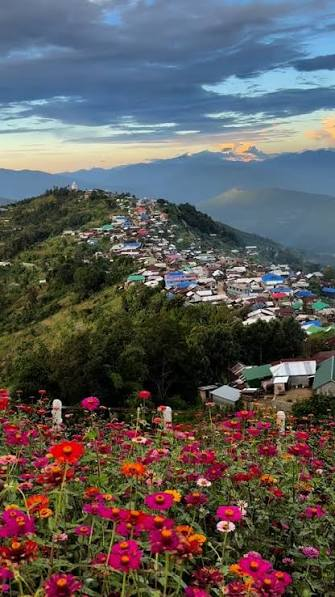
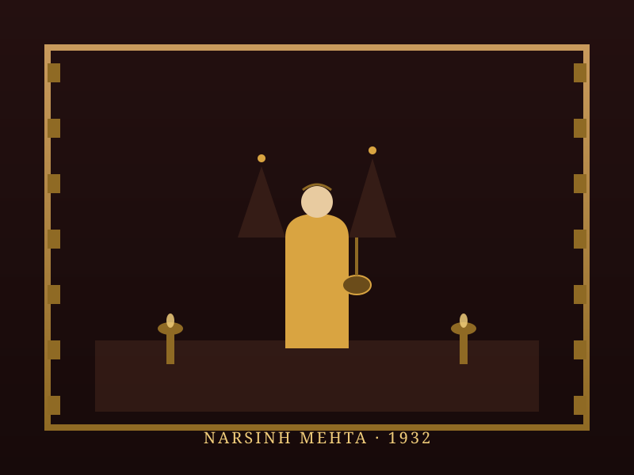
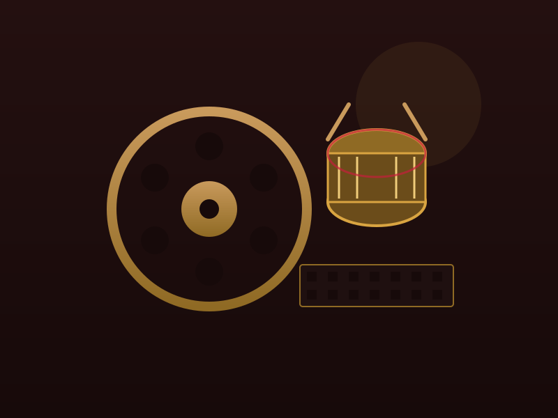

Manipuri Cinema Explorer
Step into the extraordinary world of Manipuri cinema, renowned globally for its deep artistic integrity, social realism, and cinematic poetry. From Matamgi Manipur (1972), the first feature film, to international film festival laureates capturing the soul of the Northeast.
From Matamgi Manipur to Global Acclaim
Manipuri cinema began its journey into the celluloid era with the release of *Matamgi Manipur* (The Days of Our Parents) on April 9, 1972, directed by Debkumar Bose. Despite modest infrastructure and historical hurdles, the industry quickly cultivated a distinct voice defined by stark social realism, poetic framing, and authentic cultural representation.
Master filmmakers like Aribam Syam Sharma placed Manipuri art on the world stage, with films like *Imagi Ningthem* winning the Grand Prix at the Festival des 3 Continents in Nantes. Today, digital filmmaking has sparked a vibrant wave of independent narratives, making Manipur one of the most prolific regional film hubs in India.
🎞️ At a Glance
- First feature film: Matamgi Manipur (1972), directed by Debkumar Bose.
- International breakthrough: Imagi Ningthem (1981), winning prestigious global film awards.
- Industry hub: Imphal, Manipur.
- Unique distinction: Renowned for independent art-house realism and vibrant digital commercial cinema.
Film Archive of Manipuri Cinema
The iconic films that built the foundation and international prestige of Manipuri storytelling.
Matamgi Manipur (1972)
Directed by Debkumar Bose, this pioneering film marked the birth of Manipuri feature cinema and won the National Film Award.
Imagi Ningthem (1981)
A masterpiece by Aribam Syam Sharma that won the prestigious Golden Montgolfiere at the Nantes Three Continents Festival.
Sanabi (1995)
Another acclaimed work by Aribam Syam Sharma focusing on human emotions connected with a cherished horse, winning a National Award.
Phijigee Mani (2011)
Directed by O. Gautam, this poignant social family drama won critical acclaim and multiple national honors.
Loktak Lairembee (2016)
Directed by Haobam Paban Kumar, exploring life on the floating huts of Loktak Lake with breathtaking poetic realism.
Ishanou (1990)
A mesmerizing classic by Aribam Syam Sharma selected for Un Certain Regard at the Cannes Film Festival.
🏆 Legendary Visionaries
- Aribam Syam Sharma: Legendary auteur who brought Manipuri cinema to Cannes and global prominence.
- Haobam Paban Kumar: Acclaimed director known for powerful documentaries and fiction addressing socio-political reality.
- O. Gautam: Contemporary award-winning filmmaker shaping emotional familial narratives.
- Karam Manmohan: Pioneer producer and driving force behind early Manipuri film production.
Directors Who Shaped Manipuri Cinema
Manipuri cinema's international acclaim rests heavily on the visionary commitment of master directors like Aribam Syam Sharma. A musician and filmmaker of extraordinary depth, Sharma put Manipuri art on the global map with timeless masterpieces that reflect the spiritual and emotional cadence of the valley.
In the digital era, a new generation of filmmakers like Haobam Paban Kumar have continued this legacy, exploring regional complexities with unflinching honesty and poetic cinematography, ensuring Manipuri stories continue to captivate international film juries.
Chronology of Manipuri Cinema
Tracing the evolution from the first feature film to international festival acclaim.
The First Feature Film
Debkumar Bose's *Matamgi Manipur* premieres in Imphal, marking the official inauguration of Manipuri cinema.
International Breakthrough
Aribam Syam Sharma's *Imagi Ningthem* wins the Grand Prix at the Nantes Three Continents Festival in France.
Cannes Selection
*Ishanou* is officially selected for the Un Certain Regard section at the 1991 Cannes Film Festival.
The Digital Revolution
Transitioning to digital video technology leads to a massive surge in local commercial and independent production.
Global Festival Acclaim
Haobam Paban Kumar's *Loktak Lairembee* garners international praise and awards across major world film festivals.
Independent Renaissance
A thriving ecosystem of young directors continues to garner national awards and digital streaming recognition.
Valleys, Reels & Cinematic Heritage
Visual impressions capturing the landscape and cultural richness of Manipuri filmmaking.



📚 References & Further Reading
- Wikipedia. Cinema of Manipur — History, Directors and Milestones.
- Ministry of Information and Broadcasting, India. Regional Cinema Profiles: Manipuri Film Heritage.
- National Film Archive of India (NFAI). Preservation of Masterworks by Aribam Syam Sharma.
- Film Federation of India. Journeys in North-East Indian Independent Cinema.